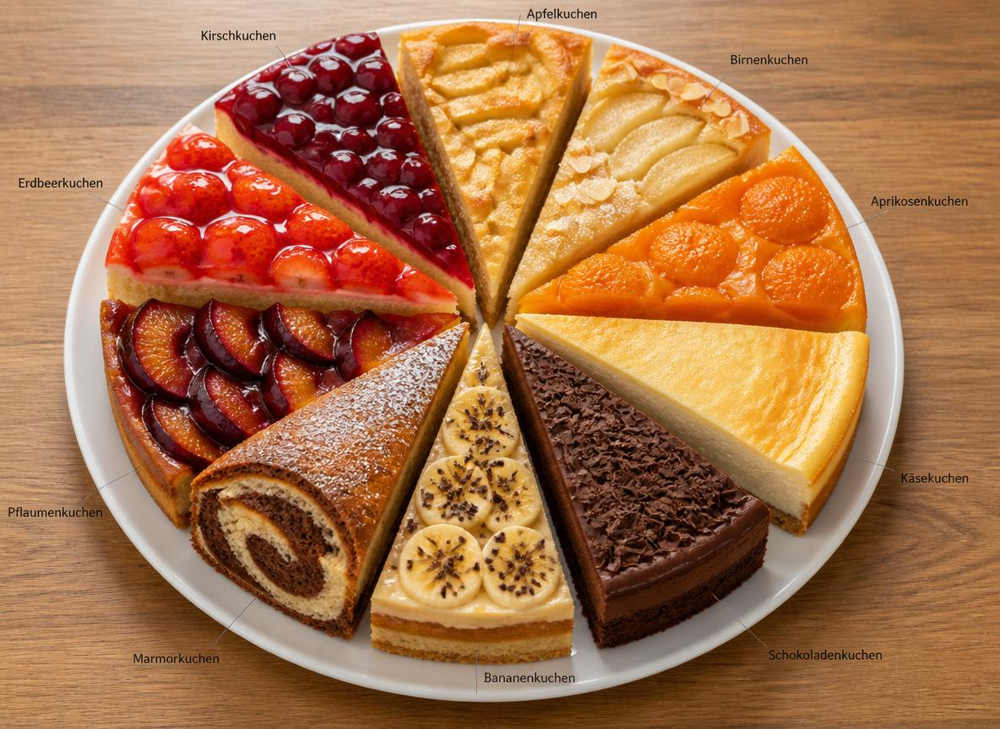

Studienkonzept zur empirischen Bestätigung von Urbanioks Hypothese
Dieses Studienkonzept beschreibt, wie eine empirische Bestätigung von Urbanioks Hypothese möglich wäre. Dazu werden Stichprobe, Variablen, statistische Hypothesen und die Auswertungsmethode dargestellt. Besonderes Augenmerk liegt auf der hierarchischen multiplen Regressionsanalyse, die anhand eines konkreten realen Beispiels und einer anschaulichen Kuchenanalogie erklärt wird. Die Darstellung richtet sich sowohl an Leser, die die Prüfbarkeit von Urbanioks Hypothese nachvollziehen möchten, als auch an Personen, die sich primär für die statistische Methode der Regressionsanalyse interessieren.
Vorbemerkungen:
Das Ziel der folgenden Betrachtungen besteht darin, das prinzipielle Vorgehen zur Prüfung der Vermutungen von Urbaniok (2025, S. 58), möglichst einfach und anschaulich zu präsentieren. Dementsprechend beschränken wir uns hier auf die Untersuchung von erwachsenen Personen und auf die Darstellung der dabei benötigten Variablen. Wir haben möglichst einfache Umsetzungen (Operationalisierungen) gewählt, die auch vollkommen anders (z.B. Fragebögen anstelle von Schätzskalen) vorgenommen werden könnten.
Ergänzend wird mit Hilfe einer Kuchenanalogie veranschaulicht, wie die Varianzaufklärungen im Zusammenspiel und im Konkurrenzkampf der Prädiktoren in den unterschiedlichen Methoden der Regressionsanalyse ablaufen.
In der multiplen Regressionsanalyse muss das Kriterium mindestens intervallskaliert sein und die Prädiktoren müssen alle mindestens intervallskaliert oder dichotom (zweistufig) sein. Eine anschauliche und ausführliche Erklärung der Skalenniveaus findet sich bei Kuhlmei (2018, S. 15-23).
Stichprobe und Variablen
Für eine Zufallsstichprobe von mindestens zehntausend erwachsenen Personen (ab 18 Jahren) aus der Population der Schweiz, werden die Messwerte auf den folgenden Variablen – durch anonyme Befragungen (Selbstberichte) – erfasst.
Kriterium:
Als Kriterium wird ein nach dem Schweregrad aller zu Lebzeiten begangenen Straftaten gewichteter intervallskalierter Durchschnittswert für jede Person ermittelt:
Schweregrad der Kriminalität = KRI
Zentraler Prädiktor von Urbaniok:
Für jede der folgenden sechs Variablen (siehe Urbaniok, 2025, S. 58) – gewaltfördernde Selbstbilder, gewaltfördernde Rollenbilder, Ablehnung des Rechtsstaats und der westlichen Werte, Extremismus, Gewaltaffinität und parallelkulturelle Orientierung – wird mit der gleichen geeigneten intervallskalierten Schätzskala die Ausprägung erhoben. Der arithmetische Mittelwert von diesen sechs Variablen liefert den:
Schweregrad der gefährdenden kulturspezifischen Prägung = KP
Prädiktoren des bekannten Erklärungsmodell:
Alter = AL (gemessen in Jahren)
Armut = AR (intervallskalierte Schätzskala)
Bildung = BI (intervallskalierte Schätzskala)
Geschlecht = GE (zweistufig)
Sozialer Status = SS (zweistufig)
Ziel der Regressionsanalyse
Das Ziel der Regressionsanalyse besteht darin mit Hilfe der Prädiktoren die Kriteriumswerte möglichst gut vorherzusagen. Konkret bedeutet das folgendes: Für Personen mit hohem Schweregrad der Kriminalität sollten möglichst hohe Kriminalitätswerte vorhergesagt werden. Für Personen mit mittleren Werten möglichst mittlere Werte und für Personen mit niedrigen Werten möglichst niedrige Werte. Wir können das auch so formulieren: Die Unterschiede (hohe, mittlere, niedrige Werte) bzw. die Varianzen in den Messwerten des Kriteriums sollen möglichst gut aufgeklärt werden.
Statistische Hypothesen
Erklärung der Notation: RPop2(KRI . KP) steht hier für die aufgeklärte Varianz R2 in der Population (Pop) der erwachsenen Schweizerinnen und Schweizer, für das Kriterium KRI durch den Prädiktor KP.
R2(KRI . KP) steht analog für die aufgeklärte Varianz R2 in der untersuchten Stichprobe.
Aus den Vermutungen von Urbaniok (2025, S. 58) können zwei statistische Hypothesen abgeleitet werden.
Statistische Hypothese 1
Der Schweregrad der gefährdenden kulturspezifischen Prägung = KP sollte über die anderen Prädiktoren (AL, AR, BI, GE, SS) hinaus in der Population (Pop) einen eigenen Varianzanteil aufklären:
RPop2(KRI . KP, AL, AR, BI, GE, SS) - RPop2(KRI . AL, AR, BI, GE, SS) > 0
Im ersten Schritt der multiplen Regressionsanalyse mit der hierarchischen Methode werden die Prädiktoren des bekannten Erklärungsmodell AL, AR, BI, GE, SS zur Vorhersage des Kriteriums verwendet. Das liefert uns die Varianzaufklärung R2(KRI . AL, AR, BI, GE, SS) in der untersuchten Stichprobe.
Im zweiten Schritt kommt dann noch der zu prüfende Prädiktor KP hinzu und wir erhalten die Varianzaufklärung R2(KRI . KP, AL, AR, BI, GE, SS) in der Stichprobe. Wird hiervon R2(KRI . AL, AR, BI, GE, SS) subtrahiert, dann wird damit der Einfluss der Prädiktoren des bekannten Erklärungsmodell eliminiert.
Hinweis: Die in der Stichprobe aufgeklärten Varianzen dienen als Schätzwerte für die Varianzaufklärungen in der Population.
Statistische Hypothese 2
Die Prädiktoren (AL, AR, BI, GE, SS) dürfen über den Prädiktor KP hinaus keine signifikante Varianzaufklärung in der Population ergeben, weil Urbaniok (2025, S. 58) behauptet, dass KP hauptursächlich für kriminelles Verhalten ist:
RPop2(KRI . KP, AL, AR, BI, GE, SS) - RPop2(KRI . KP) = 0
Bewertung
Erst wenn die Prüfungen der statistischen Hypothesen mit Hilfe von Signifikanztests (das wären hier F-Tests) im Sinne dieser Vermutungen ausfallen, wird in der seriösen Wissenschaft die aufgestellte Theorie als empirisch gestützt, bewährt oder belegt bewertet.
Zum aktuellen Zeitpunkt bleibt die Annahme einer gefährlichen kulturspezifischen Prägung in bestimmten Ländern, als zusätzliche oder sogar einzige Ursache (neben bzw. gegenüber Alter, Geschlecht, sozialer Status, Bildung, Armut usw.) für erhöhte Kriminalität, eine – vielleicht gut begründete – noch nicht belegte theoretische Vermutung.
Mögliche Ergänzungen
Auf der einen Seite könnte der Schweregrad der gefährdenden kulturspezifischen Prägung entsprechend den vermuteten Bedeutungen der genannten Einzelkomponenten beliebig anders gewichtet werden oder es könnten auch die Einzelkomponenten von KP als einzelne Prädiktoren verwendet werden.
Auf der anderen Seite könnten aber auch noch Prädiktoren wie soziales Umfeld (z.B. die Anzahl krimineller Freunde) und das Ausmaß von psychischer Erkrankung als weitere Prädiktoren dem bekannten Erklärungsmodell hinzugefügt werden.
Kuchenanalogie: Veranschaulichung der Varianzaufklärungen

Mutter Kristina hat für den Besuch ihrer Kinder am Sonntagnachmittag zehn Stück Kuchen vorbereitet. Die Varianzaufklärungen im Rahmen der verschiedenen Methoden der Regressionsanalyse sollen im Folgenden mit Hilfe dieser Kuchenanalogie illustriert werden.
Um es im fiktiven Beispiel möglichst einfach und anschaulich zu gestalten:
- werden für die sozialpsychologische Forschung unrealistisch hohe Varianzen des Kriteriums aufgeklärt und die gemeinsamen Varianzen zwischen den Prädiktoren sind stark vereinfacht dargestellt.
- essen die Kinder nur von den Kuchensorten, die sie mögen, auf alles andere reagieren sie allergisch.
- haben die Kinder vor dem Besuch alle genügend lange gefastet, damit sie den Kuchen den sie mögen vollständig aufessen können.
- fallen die Ergebnisse für die statistische Hypothese 1 positiv und für die statistische Hypothese 2 negativ aus.
Die zehn Stück Kuchen symbolisieren die Gesamtvarianz von 100% des Kriteriums. Jedes von den Kindern – sie stehen für die Prädiktoren – einzelne, verzehrte Stück Kuchen steht für eine 10% Varianzaufklärung des Kriteriums.
Varianzaufklärungen des Kriteriums bei der einfachen Regressionsanalyse mit nur einem Prädiktor
Mutter Kristina ist zunächst enttäuscht, am Sonntagnachmittag kommt nur der Sohn Klaus Peter zu Besuch, er repräsentiert den Prädiktor kulturspezifische Prägungen = KP. Er verputzt den gesamten Kirsch-, Erdbeer-, Schokoladen-, Käse- und Birnenkuchen. Kristina seufzt zufrieden, immerhin wurde die Hälfte ihres Kuchens gegessen.
In der Regressionsanalyse werden durch diesen Prädiktor 50% der Varianz des Kriteriums aufgeklärt. Das wäre ein Ergebnis das ganz im Sinne der Vermutung der Prädiktor kulturspezifische Prägungen erklärt gut kriminelles Verhalten, gekoppelt mit der folgenden statistischen Hypothese: RPop2(KRI . KP) > 0, ausfällt.
Varianzaufklärungen des Kriteriums bei der multiplen Regressionsanalyse – Standard Methode – mit zwei Prädiktoren
Am nächsten Sonntagnachmittag kommen Klaus Peter und die jüngste Tochter Birgit. Sie stehen für die Prädiktoren kulturspezifische Prägungen = KP und BI = Bildung. Während Mutter Kristina auf die Toilette geht, stürzen sich die beiden hemmungslos auf den Kuchenteller. Als Kristina zurückkommt sind der gesamte Kirsch-, Erdbeer-, Schokoladen-, Käse-, Birnen- und Apfelkuchen vertilgt. Sie ist sehr zufrieden, weil 60% ihres Kuchens gegessen wurde. Allerdings hat sie keine Ahnung wer von den beiden Kindern was genau gegessen hat.
In der Regressionsanalyse werden durch diese beiden Prädiktoren 60% der Kriteriumsvarianz zusammen aufgeklärt. Das wäre ein Ergebnis, das ganz im Sinne der Vermutung die Prädiktoren kulturspezifische Prägungen und die Bildung erklären gut gemeinsam kriminelles Verhalten, gekoppelt mit der folgenden statistischen Hypothese: RPop2(KRI . KP, BI) > 0, ausfällt. Welche Erklärungsanteile die einzelnen Prädiktoren dabei haben bleibt ungewiss.
Varianzaufklärungen des Kriteriums bei der multiplen Regressionsanalyse – Hierarchische Methode für die statistische Hypothese 1
Am nächsten Sonntagnachmittag kommen alle Kinder zu Besuch: Klaus Peter, Alwin, Arthur, Birgit, Gertrud und Stoffel Stefan. Sie stehen für die Prädiktoren kulturspezifische Prägungen = KP, Alter = AL, Armut = AR, Bildung = BI, Geschlecht = GE und sozialer Status = SS. Da Kristina weiss, wie verfressen Klaus Peter ist, muss dieser zunächst warten und es dürfen sich zunächst Alwin, Arthur, Birgit, Gertrud und Stoffel Stefan ungestört bedienen: Sie verzehren gemeinsam den gesamten Kirsch-, Erdbeer-, Schokoladen- und Apfelkuchen (40%). Als Klaus Peter anschliessend zum Zuge kommt, kann er nichts mehr von seinem geliebten Kirsch-, Erdbeer- und Schokoladenkuchen essen - alles weg. Dass der Apfelkuchen weg ist stört ihn wenig, weil er den sowieso nie mochte. Daraufhin isst er den gesamten Käse- und Birnenkuchen. Insgesamt wurden 60% des Kuchens verputzt. Klaus Peter hat dabei 20% des Kuchens, als ganz eigenen Anteil, über seine Geschwister hinaus verzehrt.
In der Regressionsanalyse werden durch den Prädiktor KP – trotz der Eliminierung der Prädiktoren AL, AR, BI, GE, SS – 20% der Varianz des Kriteriums aufgeklärt:
R2(KRI . KP, AL, AR, BI, GE, SS) - R2(KRI . AL, AR, BI, GE, SS) = 60% - 40% = 20%
Das wäre ein Ergebnis das ganz im Sinne der Vermutung ausfällt: der Prädiktor kulturspezifische Prägungen erklärt gut kriminelles Verhalten, auch wenn die bekannten Einflussgrößen Alter, Armut, Bildung, Geschlecht und sozialer Status eliminiert werden, gekoppelt mit der folgenden statistischen Hypothese:
RPop2(KRI . KP, AL, AR, BI, GE, SS) - RPop2(KRI . AL, AR, BI, GE, SS) > 0
Varianzaufklärungen des Kriteriums bei der multiplen Regressionsanalyse – Hierarchische Methode für die statistische Hypothese 2
Am nächsten Sonntagnachmittag kommen wieder alle Kinder zu Besuch: Klaus Peter, Alwin, Arthur, Birgit, Gertrud und Stoffel Stefan. Sie stehen für die Prädiktoren kulturspezifische Prägungen = KP, Alter = AL, Armut = AR, Bildung = BI, Geschlecht = GE und sozialer Status = SS. Diesmal darf Klaus Peter als Erster an den Kuchenteller. Er verputzt den gesamten Kirsch-, Erdbeer-, Schokoladen-, Käse- und Birnenkuchen (50%).
Anschliessend dürfen Alwin, Arthur, Birgit, Gertrud und Stoffel Stefan zuschlagen. Alwin mag: Erdbeer- und Apfelkuchen. Arthur mag: Schokoladen- und Apfelkuchen, Birgit mag: Kirsch- und Apfelkuchen. Gertrud mag: Kirsch- und Erdbeerkuchen, Stoffel Stefan mag: Kirsch- und Apfelkuchen. Da bereits der gesamte Kirsch-, Erdbeer-, Schokoladenkuchen gegessen wurde, vertilgen sie zusammen den verbleibenden Apfelkuchen. Am Ende wurden insgesamt wieder 60% des Kuchens verzehrt.
In der Regressionsanalyse werden durch die Prädiktoren AL, AR, BI, GE, SS – trotz der Eliminierung des Prädiktors KP – immerhin noch 10% der Kriteriumsvarianz aufgeklärt:
R2(KRI . KP, AL, AR, BI, GE, SS) - R2(KRI . KP) = 60% - 50% = 10%
Das wäre ein Ergebnis, das nicht im Sinne der Vermutung ausfällt: die Prädiktoren Alter, Armut, Bildung, Geschlecht und sozialer Status können kriminelles Verhalten nicht erklären,
wenn die Einflussgröße kulturspezifische Prägungen eliminiert wurde.
Die statistische Hypothese
RPop2(KRI . KP, AL, AR, BI, GE, SS) - RPop2(KRI . KP) = 0
würde hier abgelehnt werden.
Literaturempfehlung zur multiplen Regressionsanalyse
Eine umfangreiche und anschauliche Darstellung der multiplen Regressionsanalyse findet sich bei Kuhlmei (2020, S. 77-136).